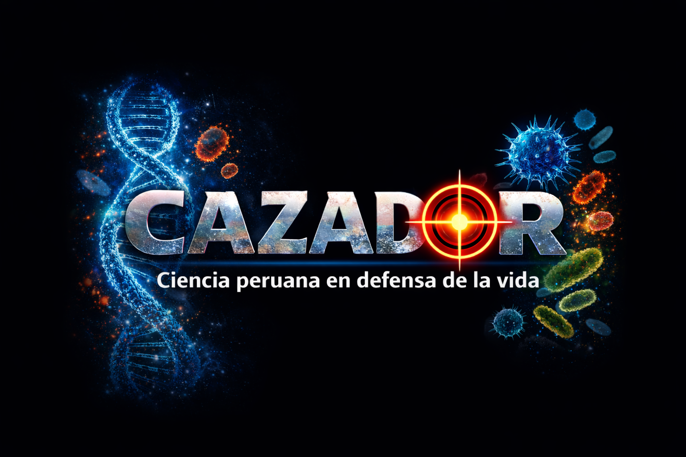

Plataforma científica que rastrea, preserva y revela
el conocimiento que el mundo ignora
Médico Veterinario, destacado científico con un Ph.D. en Biología. Especialista en producción de vacunas vivas, inactivadas y recombinantes para uso agropecuario. Investigador Principal de la Universidad Nacional "San Luis Gonzaga" de Ica, Gerente General del Grupo FARVET. Profesor Extraordinario y Doctor Honoris Causa. En mérito a su excelencia académica y de investigador a lo largo de sus 20 años de experiencia como profesor en la Facultad de Medicina Veterinaria.
ALIANZA FARVET Y BASE2BIO
⬇ Descargar PDFDOS VISIONES UN SOLO VECTOR
⬇ Descargar PDFLA VIBRACIÓN SECRETA DE LA VIDA
⬇ Descargar PDFNUTRICIÓN Y LONGEVIDAD
⬇ Descargar PDF